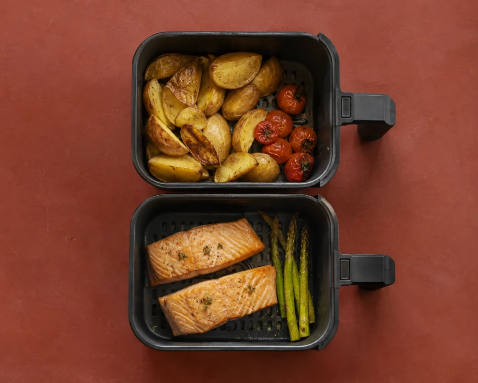

A cooking skill for your AI assistant
What goes in which drawer?
Start with what you’ve got or let your assistant check your recent grocery orders. Get a plan for what goes in each drawer and how to get dinner ready together.
One or two drawers Codex and Claude Code

How It Works
-
Check Recent Orders
Let your assistant read Zapp or Zoom by Ocado through iPhone Mirroring. It can also work from a receipt or what you tell it.
-
Get a Drawer Plan
See what can cook together, how much room it needs, and when a second batch makes sense.
-
Cook and Check
Set each drawer or have your assistant prepare the program in VeSync. Press Start on the fryer and check each food before serving.
Try Asking
Give the potatoes their own program so they have time to brown. Check if the tomatoes can cook alongside them and if the salmon and asparagus can share the other drawer.
Check my recent Zapp and Zoom orders and plan dinner. I’d like salmon with asparagus, crispy baby potatoes and jammy tomatoes. Tell me what goes in each drawer and help both finish together.
Install the Skill
Download the ZIP and open the skills folder. Copy the whole air-frying folder into your assistant’s skills folder. Keep any existing copy until you’ve reviewed the differences.
Codex
Copy to ~/.agents/skills/. Start a new session and type $air-frying with your request.
Claude Code
Copy to ~/.claude/skills/. Start a new session and begin your request with /air-frying.
Privacy & Control
The site has no analytics or forms. Order lookups use your own signed-in apps and only the food details needed for the meal. VeSync and iPhone Mirroring are optional. Update checks contact GitHub and keep their state on your machine. You choose when to install an update.